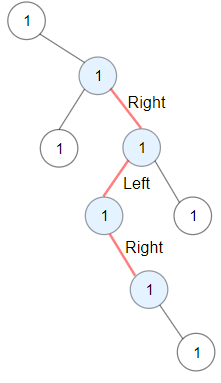
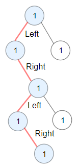

1372. 二叉树中的最长交错路径
自底向上 DFS，每个结点算出「从它出发先左 / 先右」的最长交错长；换方向才能 +1 接到孩子的链上。
思路
- 状态就两个数：
l[node]= 从node出发先向左的最长交错长，r[node]= 先向右。子结点的答案天生能接上：方向相反才合法。 - 转移：
l[node] = r[left] + 1、r[node] = l[right] + 1；孩子是空位时记-1，加 1 正好归零（单点路径长为 0）。 - 后序遍历一遍，每个结点算完顺手更新全局
best；每个结点只算一次，O(n)。 - 不能自顶向下带着方向 DFS 记忆化吗？可以但没必要——自底向上两个数组就够，最短最好记。
图解
最优解
1class Solution {2 private int best;3 4 public int longestZigZag(TreeNode root) {5 best = 0; // 顺手清零，防同一实例被多次调用时残留旧答案6 dfs(root);7 return best;8 }9 10 // 返回 [从 node 出发先向左的最长交错长, 先向右的]；自底向上，每个结点只算一次11 private int[] dfs(TreeNode node) {12 if (node == null) return new int[]{-1, -1}; // 空位没有边，返回 -1 让父结点的 +1 归零13 int[] l = dfs(node.left), r = dfs(node.right);14 int goLeft = l[1] + 1; // 先向左走：接上左孩子「先向右」的链15 int goRight = r[0] + 1; // 先向右走：接上右孩子「先向左」的链16 best = Math.max(best, Math.max(goLeft, goRight));17 return new int[]{goLeft, goRight};18 }19}题目
给你一棵以 root 为根的二叉树，二叉树中的交错路径定义如下：
- 选择二叉树中 任意 节点和一个方向（左或者右）。
- 如果前进方向为右，那么移动到当前节点的的右子节点，否则移动到它的左子节点。
- 改变前进方向：左变右或者右变左。
- 重复第二步和第三步，直到你在树中无法继续移动。
交错路径的长度定义为：访问过的节点数目 - 1（单个节点的路径长度为 0 ）。
请你返回给定树中最长 交错路径 的长度。
示例 1：

输入：root = [1,null,1,1,1,null,null,1,1,null,1,null,null,null,1,null,1] 输出：3 解释：蓝色节点为树中最长交错路径（右 -> 左 -> 右）。
示例 2：

输入：root = [1,1,1,null,1,null,null,1,1,null,1] 输出：4 解释：蓝色节点为树中最长交错路径（左 -> 右 -> 左 -> 右）。
示例 3：
输入：root = [1] 输出：0
提示：
- 每棵树最多有
50000个节点。 - 每个节点的值在
[1, 100]之间。
题面取自力扣当前版本。
数据快照 2026-11-04。题面版权归力扣所有，本站点仅供本人学习使用，请勿对外发布。